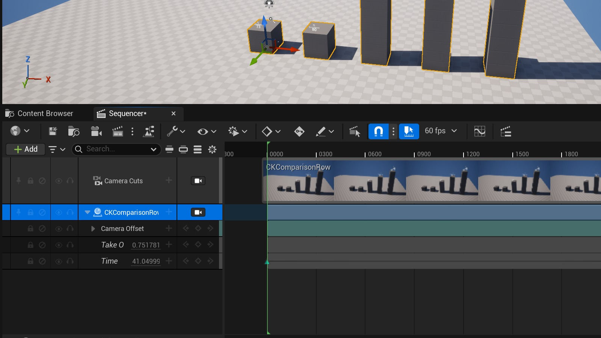

Sequencer
The comparison is driven by one value, Time (Comparison | Playback). The sequence keys it; nothing else is needed.
Fit Sequence
Press Fit Sequence on the comparison actor. Then:
- A Level Sequence named
LS_<Level>_<Actor>is created next to your level (or in/Game/Cinematicsif the level has no folder of its own). The actor's Sequence property points to it. - The actor is bound in the sequence and its Time track is keyed linearly from 0 to the end of the data.
- One camera cut per shot is added, plus 32 warm-up frames before frame 0.
- The sequence length follows your data. Change the data, the timing or the aspect, and press Fit Sequence again.
- Demo maps that you save into your own
/Gamefolder get their own sequence on the first press. The demo maps inside the plugin ship with theirs inPlugins > Comparison Kit > Cinematics.

The sequence runs at the frame rate set on the sequence (60 fps in the demos). For 30 fps set the sequence's Display Rate to 30 and press Fit Sequence again, rather than overriding the output frame rate in a render preset.
Retiming
The Time track is an ordinary curve. Add keys to slow down, hold on a moment, speed up or reverse; the whole scene follows, including counting numbers, flags and physics-free animation. Fit Sequence rewrites this track, so retime after your last Fit Sequence. For a hold on one item without touching the curve, use the hold column in the data (see Data).
Camera Offset
Camera Offset (Comparison | Camera) is your layer on top of the automatic camera. Use + Track > Camera Offset in Sequencer to key it: a push-in, a tilt, a drift that still follows your data. It moves in the camera's own space: X forward, Y right, Z up, plus a turn.
Take Over: your own camera
- Place a Cine Camera Actor in the level and animate it in the same sequence.
- Assign it to Take Over Camera.
- Key Take Over from 0 to 1 where you want your shot.
The kit camera blends into yours (position, rotation and field of view) and back again. At 0 you see the kit's camera, at 1 yours.
Your own tracks
Add anything you like: lights, sound, effects, your own actors. Fit Sequence rewrites only the Time keys and the camera cuts, and stretches every section to the new length; your own keys stay where they are. Voiceover and Subtitle File (Comparison | Brand) are placed for you: Fit Sequence puts the voiceover on an audio track at 0.
Runtime and photosensitivity
Runtime shows the length of the video as you edit. Type a Target Runtime (seconds) and press Fit Timing To Runtime: the pace changes so the video lands on it. The kit's own timings never cut faster than three times a second (the broadcast flash limit, ITU-R BT.1702 / WCAG 2.3.1). If your timings do, Fit Sequence says so in Data Status: slow the timing until the warning goes.
Without a sequence
Press Play in a demo map. With Auto Play on, Time advances by itself and you watch the comparison through the actor's camera. Hold Last Frame keeps the final frame on screen at the end of Play.